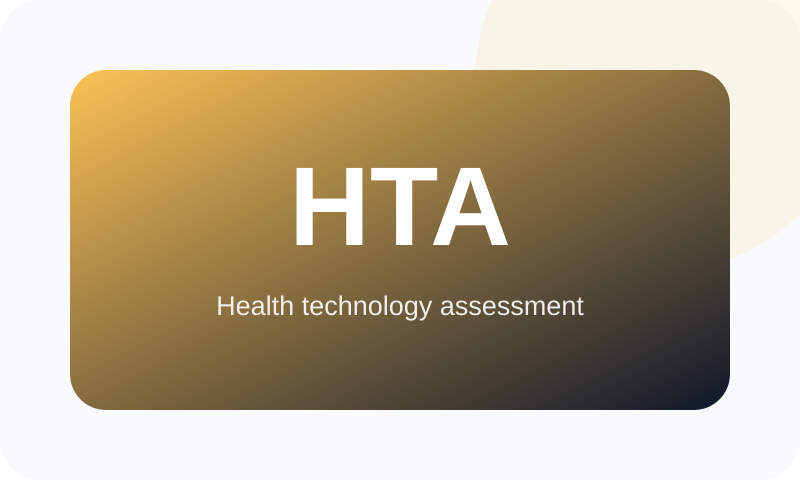

Transformation & Program Leadership Profile
Digital transformation programs designed for measurable outcomes and sustainable institutional capability.
A focused view of Mahmoud Salama’s experience diagnosing institutional needs, defining target capabilities, governing complex portfolios, delivering controlled increments, coordinating agencies and vendors, enabling adoption, and sustaining operational value.
Official current title: Head of Central Administration – Information Systems & Digital Transformation, UPA

Leadership Proposition
How the experience maps to this role
The same verified career evidence is reorganized around the accountabilities most relevant to Digital Transformation Program Director opportunities.
Diagnose & Prioritize
Start with outcomes, evidence baselines, process observation, stakeholder needs, risks, dependencies, and decision priorities.
- Outcome and benefits definition
- Evidence-based prioritization
- Roadmaps and investment sequencing
Govern & Deliver
Establish decision rights, quality gates, architecture and data standards, vendor accountability, release controls, and phased delivery.
- Program and portfolio governance
- Cross-agency coordination
- Controlled implementation increments
Adopt & Sustain
Prepare roles, procedures, training, support, documentation, knowledge transfer, performance measures, and continuous improvement.
- 39,000+ staff reached
- Adoption and capability building
- Benefits and service measurement
Selected Evidence
Programs and platforms aligned to the role
Public-safe examples distinguish the contribution made, operating environment, and evidence type.
Selected evidence
MedIQ National Transformation Portfolio
Connected platforms, governance, automation, data validation, operational control, adoption, and national public-sector reach.
- Role
- Led architecture & governance
- Environment
- 12,000+ public-sector entities
- Evidence
- Portfolio scale + operational metrics

Selected evidence
National Pharmaceutical Track & Trace Program
Program vision, compliance model, cross-agency coordination, interoperability principles, and technology roadmap.
- Role
- Governance lead
- Environment
- UPA, EDA and Ministry of Health
- Evidence
- Governance and roadmap evidence

Selected evidence
Health Technology Assessment Platform
Digitized evidence submission, controlled review, assessment tracking, role-based access, dashboards, and reporting.
- Role
- Directed architecture and workflow digitization
- Environment
- Healthcare and assessment environment
- Evidence
- Program delivery evidence

Selected evidence
Oman National Educational Portal
Cross-border national platform delivery aligned with local e-government requirements and institutional operations.
- Role
- Led full-cycle delivery
- Environment
- Sultanate of Oman
- Evidence
- Program delivery evidence
Evidence boundary
Claims are limited to approved professional records and public-safe portfolio information. Confidential data, credentials, source code, supplier-sensitive information, and restricted configurations are excluded.
Claims are limited to approved professional records and public-safe portfolio information. Confidential data, credentials, source code, supplier-sensitive information, and restricted configurations are excluded.
Capability View
Core competencies for Digital Transformation Program Director
Transformation Strategy
- Outcome definition
- Capability roadmaps
- Investment sequencing
- Benefits realization
Program Governance
- Decision rights
- Quality gates
- Risk and escalation
- Executive reporting
Cross-Agency Delivery
- Stakeholder alignment
- Interoperability
- Policy and compliance
- Vendor coordination
Change & Adoption
- Role-based training
- Procedures and support
- Super-user networks
- Knowledge transfer
Data-Driven Improvement
- KPI frameworks
- Data quality
- Dashboards
- Continuous improvement
Technology Enablement
- Enterprise platforms
- Integration
- Analytics
- Security and resilience
Career Evidence
Progression from hands-on engineering to executive leadership
Head of Central Administration – Information Systems & Digital Transformation
Egyptian Authority for Unified Procurement, Medical Supply & Medical TechnologyEnterprise technology strategy, architecture, platforms, integration, data, governance, vendors, security, recovery, quality, and multidisciplinary delivery.
General Manager – Systems, Applications & Technical Support
Egyptian Authority for Unified ProcurementCritical platform implementation and support, nationwide adoption, reporting, quality, release governance, mentoring, and operational continuity.
Development Team Leader & Senior Full-Stack Developer
Keyframe Egypt and Integral Solutions LLCCross-border engineering leadership and full-cycle delivery of public-sector, healthcare, education, and enterprise platforms in Egypt and Oman.
Discuss a senior technology opportunity
For executive leadership, architecture, transformation, advisory, or program-delivery discussions across Egypt, the GCC, Africa, and remote environments.